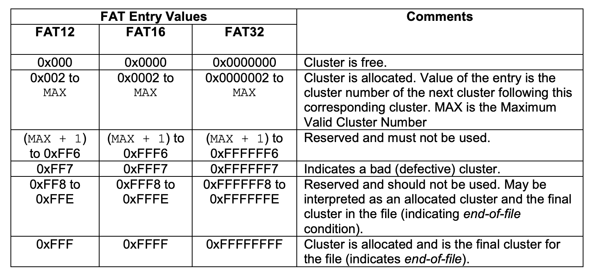
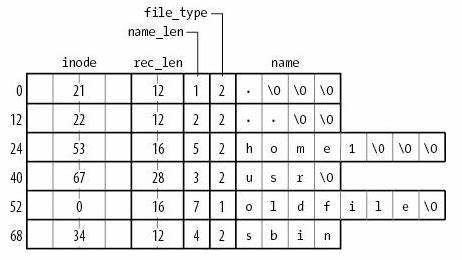

背景
应用眼中的文件系统
- 一组 API
- mount - 文件系统管理gg
- mkdir, rmkdir, link, symlink, unlink... - 目录管理
- open, mmap, read, write, lseek... - 文件管理
本次课内容与目标
理解两个文件系统的设计与实现
- FAT
- UNIX 文件系统/ext2
文件系统实现：需求分析
例子：Linux 文件系统初始化
最小的 Linux 系统镜像
- 构造 Linux 启动时的 “根文件系统”
- 随操作系统启动加载
你可以像调试你的 oslab 一样调试 Linux!
initramfs
├── busybox
└── init
/busybox是个二进制文件- ELF 64-bit LSB executable, statically linked
/init只有 3 行- 实际只做一件事: 执行 busybox
exec /busybox sh
- 实际只做一件事: 执行 busybox
Linux 启动第一个应用程序时的状态
“几乎什么也没有”
- 但所有的一切都可以被
系统调用 “创建” 出来- mount - 文件系统管理
- mkdir, rmkdir, link, symlink, unlink... - 目录管理
- open, mmap, read, write, lseek... - 文件管理
/busybox mkdir -p /bin && /busybox mv /busybox /bin/
c1="arch ash base64 cat chattr chgrp chmod chown conspy cp cpio cttyhack date dd df dmesg dnsdomainname dumpkmap echo ed egrep false fatattr fdflush fgrep fsync getopt grep gunzip gzip hostname hush ionice iostat ipcalc kbd_mode kill link linux32 linux64 ln login ls lsattr lzop makemime mkdir mknod mktemp more mount mountpoint mpstat mt mv netstat nice nuke pidof ping ping6 pipe_progress printenv ps pwd reformime resume rev rm rmdir rpm run-parts scriptreplay sed setarch setpriv setserial sh sleep stat stty su sync tar touch true umount uname usleep vi watch zcat"
c2="[ [[ awk basename bc beep blkdiscard bunzip2 bzcat bzip2 cal chpst chrt chvt cksum clear cmp comm crontab cryptpw cut dc deallocvt diff dirname dos2unix dpkg dpkg-deb du dumpleases eject env envdir envuidgid expand expr factor fallocate fgconsole find flock fold free ftpget ftpput fuser groups hd head hexdump hexedit hostid id install ipcrm ipcs killall last less logger logname lpq lpr lsof lspci lsscsi lsusb lzcat lzma man md5sum mesg microcom mkfifo mkpasswd nc nl nmeter nohup nproc nsenter nslookup od openvt passwd paste patch pgrep pkill pmap printf pscan"
c3="pstree pwdx readlink realpath renice reset resize rpm2cpio runsv runsvdir rx script seq setfattr setkeycodes setsid setuidgid sha1sum sha256sum sha3sum sha512sum showkey shred shuf smemcap softlimit sort split ssl_client strings sum sv svc svok tac tail taskset tcpsvd tee telnet test tftp time timeout top tr traceroute traceroute6 truncate ts tty ttysize udhcpc6 udpsvd unexpand uniq unix2dos unlink unlzma unshare unxz unzip uptime users uudecode uuencode vlock volname w wall wc wget which who whoami whois xargs xxd xz xzcat yes"
for cmd in $c1 $c2 $c3; do
/bin/busybox ln -s /bin/busybox /bin/$cmd
done
mkdir -p /proc && mount -t proc none /proc
mkdir -p /sys && mount -t sysfs none /sys
文件系统实现
在一个 I/O 设备 (驱动) 上实现 “目录树” 的数据结构。
VFS: 管理所有文件系统共享的部分
- 对象 (inode) 分配/回收、路径/符号链接解析、挂载
- 定义了每个具体文件系统需要实现的接口
块设备驱动
read_block,write_block
目录/文件 API
mkdir,rmdir,link,unlinkopen,read,write,stat
回到数据结构课……
文件系统实现
- 在
read_block,write_block上实现一个 “目录树” 的抽象数据类型

File Allocation Table (FAT)
让时间回到 1980 年
5.25" 软盘：单面 180 KiB
- 360 个 512B 扇区 (sectors)
- 在这样的设备上持久化数据，应该选用怎样的数据结构？

FAT 文件系统：分析
抛开 workload 谈优化，就是耍流氓。
需求
- 树状的目录结构
- 系统中以小文件为主 (几个 block 以内)
- 无需支持链接
实现方式
- 链表
- 任何复杂的高级数据结构都显得浪费
用链表存储数据：两种设计
- 在每个数据块后放置指针
优点 ：实现简单、无须单独开辟存储空间缺点 ：数据的大小不是 $2^k$; 单纯的 lseek 需要读整块数据
- 将指针集中存放在文件系统的某个区域
优点 ：局部性好；lseek 更快缺点 ：集中存放的数据损坏将导致数据丢失 (怎么办？)
哪种方式的缺陷是致命、难以解决的？
集中保存所有指针
集中存储的指针容易损坏？存 $n$ 份就行！
- FAT-12/16/32 (FAT entry，即 “next 指针” 的大小)

“File Allocation Table” 文件系统
RTFM 得到必要的细节
- 逻辑上，文件/目录都是字节序列 (虚拟化的磁盘)
- 以 cluster (簇) 为单位链接 (FAT 集中存储链表的 next)
- 目录也是文件
- 一个 (filename, size, firstblock) 的列表，顺序存储
mmap 到内存，就可以直接访问
struct fat_volume {
struct fat_header header;
struct fat[FAT_NUM];
char clusters[CLUSTER_SZ][];
};
FAT: 链接存储的文件
“FAT” 的 “next” 数组
0: free;2...MAX: allocated;ffffff7: bad cluster;ffffff8-ffffffe,-1: end-of-file

目录树实现：目录文件
以普通文件的方式存储 “目录” 这个数据结构
- FAT: 目录 = 32-byte 定长目录项的集合
- 操作系统在解析时把标记为目录的目录项 “当做” 目录即可
- 可以用连续的若干个目录项存储 “长文件名”

FAT: 性能与可靠性
性能
＋ 小文件简直太合适了－ 但大文件的随机访问就不行了- 4 GB 的文件跳到末尾 (4 KB cluster) 有 $2^{20}$ 次链表 next 操作
- 缓存能部分解决这个问题
- 在 FAT 时代，磁盘连续访问性能更佳
- 使用时间久的磁盘会产生碎片 (fragmentation)
- malloc 也会产生碎片，不过对性能影响不太大
- 使用时间久的磁盘会产生碎片 (fragmentation)
可靠性
- 维护若干个 FAT 的副本防止元数据损坏
- 额外的同步开销
- 损坏的 cluster 在 FAT 中标记
ext2/UNIX 文件系统
更好的文件系统：需要做到什么？
不能 “尽善尽美”，但可以在 “实际 workload” 下尽可能好
| Summary | Findings |
|---|---|
| Most files are small | Roughly 2K is the most common size |
| Average file size is growing | Almost 200K is the average |
| Most bytes are stored in large files | A few big files use most of the space |
| File systems contains lots of files | Almost 100K on average |
| File systems are roughly half full | Even as disks grow, file systems remain ~50% full |
| Directories are typically small | Many have few entries; most have 20 or fewer |
ext2/UNIX 文件系统
按对象方式集中存储文件/目录元数据
- 增强局部性 (更易于缓存)
- 支持链接
为大小文件区分 fast/slow path
- 小的时候应该用数组
- 连链表遍历都省了
- 大的时候应该用树 (B-Tree; Radix-Tree; ...)
- 快速的随机访问

ext2 inode

ext2 目录文件
与 FAT 本质相同：在文件上建立目录的数据结构
- 注意到 inode 统一存储
- 目录文件中存储文件名到 inode 编号的 key-value mapping

ext2: 性能与可靠性
大文件的随机读写性能提升明显 ($O(1)$)
- 支持链接 (一定程度减少空间浪费)
- inode 在磁盘上连续存储，便于缓存/预取
- 依然有碎片的问题
但可靠性依然是个很大的问题
- 存储 inode 的数据块损坏是很严重的
寻找更高效的数据结构？

btrfs: Everything is a B-tree
- The BTRFS B-tree... knows only about “keys, items, and block headers.”
- 数据结构由多个 copy-on-write 的 tree 组成
- subvolume, extent allocation tree, checksum tree, chunk and device tree, reloc tree, ...
- O. Rodeth, et al. BTRFS: The Linux B-tree filesystem. ACM Transactions on Storage (ToS), 9(3), 2013.
总结
总结
本次课内容与目标
- 理解两个文件系统的设计与实现
- FAT: 链表 + 元数据存储在目录项
- UNIX 文件系统/ext2: bitmap + inode + 索引
Takeaway messages
- 文件系统是磁盘 (驱动) 上的数据结构